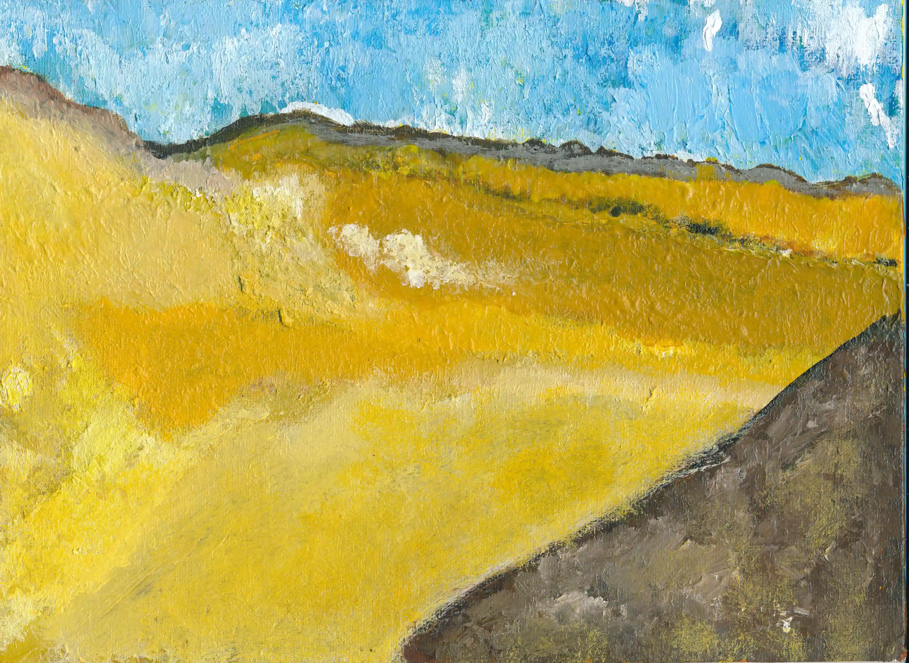

THE REMAINING ONE
ПРОБУЖДЕНИЕ ПЕСЕН…
9 треков · 1 друид · имя мира

АЛЬБОМ · THE REMAINING ONE
THE REMAINING ONE
девять песен · один друид · имя мира
Мир пережил Долгую Тишину. Моря стали песком, библиотеки — пеплом, боги — сном. Остался один друид и девять песен, которые ещё помнят, как мир назывался.
Слушай. Отвечай ритмом. Назови мир заново.
D F J K · СТРЕЛКИ · 1 2 3 4 — РУНЫ · SPACE — СЛУШАТЬ · P — ПАУЗА · M — ЗВУК
ГЛАВА I · BARCHANS
Дюны бывшего моря
«Море не исчезло. Оно научилось быть песком.»
РИТМ. Руны падают в такт настоящим ударам. Попадай в полосу.
ЭХА. В тихих местах появляется око. Нажми SPACE или «СЛУШАТЬ».
ВЫБОР. После песни ты решишь, что оставить миру.
D F J K · СТРЕЛКИ · 1 2 3 4 — РУНЫ · SPACE — СЛУШАТЬ · P — ПАУЗА
ПЕСНЯ ПРИОСТАНОВЛЕНА
Мир замер. Музыка тоже.
P / ESC — ПРОДОЛЖИТЬ · M — ЗВУК · задержка 0 мс
ГЛАВА I ЗАВЕРШЕНА
РАНГ · СЛУШАТЕЛЬ
ВЫБОР
ТЫ ВЫБРАЛ
ФИНАЛ
THE REMAINING ONE
НАСТРОЙКИ
Если ты стабильно опаздываешь — увеличь задержку. Если спешишь — уменьши.
Меньше рун, больше времени на вдох.
Удаляет выборы, эха и открытые главы.
КОДЕКС
Эха, которые ты услышал. Их 27 — по три на каждую песню.
ПУТЬ
Можно вернуться в любую открытую главу. Выборы и эха сохраняются.
ПОДТВЕРЖДЕНИЕ